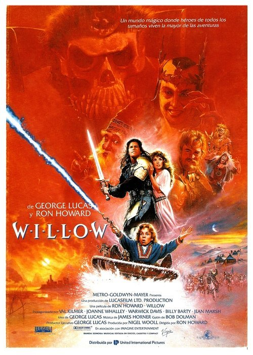

Willow (1988)
Sinopsis Rápida
En un mundo mágico amenazado por una hechicera maligna, un pequeño mago deberá emprender una peligrosa misión para salvar a una princesa bebé y evitar una catástrofe inminente.
Sinopsis Detallada
Willow es una aventura épica que sigue a Willow Ufgood, un humilde agricultor y mago aprendiz, que descubre a Elora Danan, una bebé profetizada para destruir a la malvada Reina Bavmorda. Acompañado por un grupo improbable de héroes, Willow se embarca en un viaje lleno de peligros, criaturas mágicas y desafíos épicos para proteger a la bebé. La película destaca por sus efectos especiales innovadores para su época y una trama llena de acción, humor y corazón.
¿Por qué tenés que verla?
- Una aventura mágica inolvidable para toda la familia, llena de acción y criaturas fantásticas.
- Los efectos especiales innovadores para 1988 siguen siendo impresionantes y crean un mundo mágico creíble.
- Su impacto en la fantasía cinematográfica es innegable, inspirando a otras películas y series de fantasía posteriores.
- Una historia de valentía y amistad que trasciende las generaciones.
Idea Extra
Comparación de la película original de 1988 con la serie de Disney+ de 2022: Evolución de la historia y personajes.
{{CONTENIDO_RELACIONADO}}